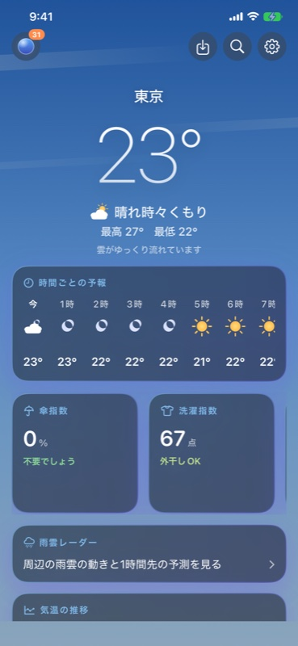
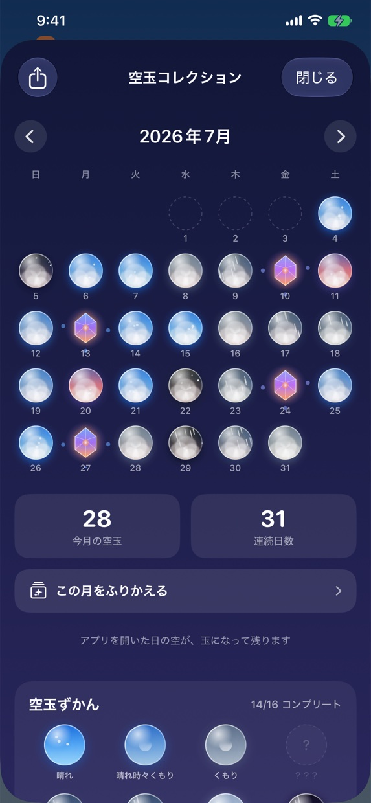
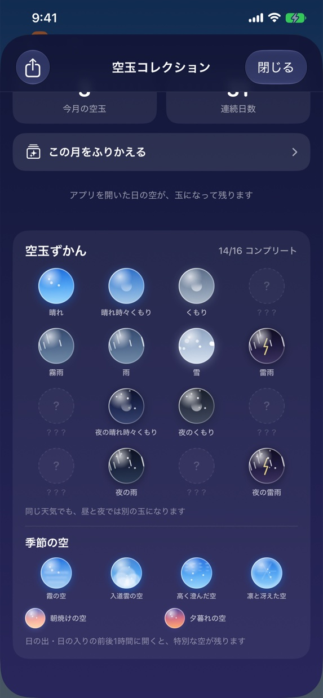
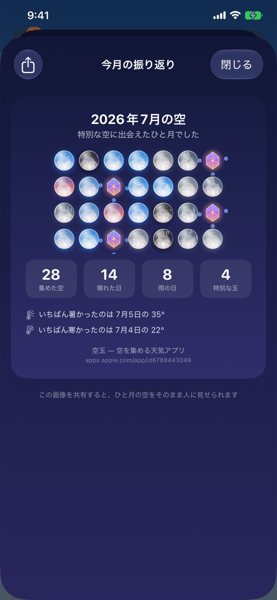
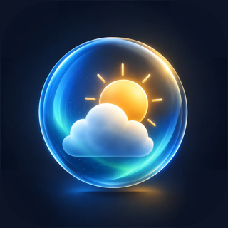

The sky becomes an orb
The pattern comes from that day's weather, temperature and humidity, so no two orbs are ever alike. They gather in a calendar, month by month, until a year of your own sky is sitting there.
so-ra-da-ma · “sky orb” in Japanese
Keep the sky in a glass orb.
One a day. A weather app you can collect.
Download on theApp StoreiPhone and Apple Watch · Free
Features
Every day you open the app, that sky stays behind in a calendar — in a shape it will never take again.
The pattern comes from that day's weather, temperature and humidity, so no two orbs are ever alike. They gather in a calendar, month by month, until a year of your own sky is sitting there.
Spring wears a haze, summer builds towering clouds, autumn lines up mackerel skies, winter turns the light crisp and clear. Dawn, dusk and night each look different — and a night orb holds the moon, at the phase it really was.
Soradama follows the 24 traditional Japanese seasons. On the day autumn begins, on the day white dew gathers, the orb takes a form reserved for that day — and the app quietly tells you why.
Hourly and 10-day forecasts, an umbrella index and a laundry index judged on the hours ahead, widgets for the Home and Lock Screens, and an Apple Watch app. The rain radar reaches 60 minutes ahead — it uses data from the Japan Meteorological Agency, so it covers Japan and nearby areas only.
Screens




For you
you'd rather the weather left something behind
you like noticing the seasons turn
you care how your Home Screen looks
you want one small thing to keep up daily
you're tired of guessing about the umbrella
you check the weather from your wrist

The moment you open it, today is already saved.
Download on theApp StoreFree · No account needed